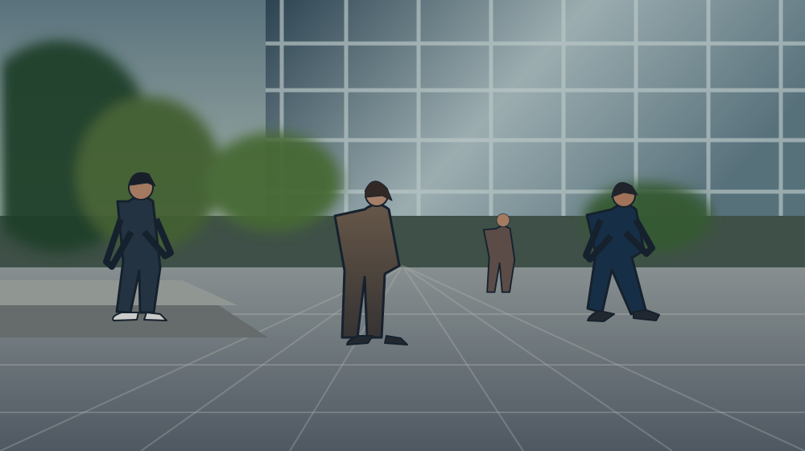

LIVE
FPS: 24.7
Person 1Walking 0.94
Person 2Walking 0.89
Person 3Running 0.92
Person 4Standing 0.76
Camera is not active
Start the camera or choose a video file
Start the camera or choose a video file
Action Distribution
5Total Actions
- Walking 60%
- Running 20%
- Standing 10%
- Sitting 5%
- Falling 5%
People & Actions Over Time People Actions
Real-time Log
14:32:12 Person 3 detected - Running (0.92)
14:32:10 Person 2 detected - Walking (0.89)
14:32:08 Person 1 detected - Walking (0.94)
14:32:05 Person 4 detected - Standing (0.76)
14:32:02 Frame processed - 24.7 FPS
♧ Detection Results
| ID | Person | Action | Confidence | Time |
|---|---|---|---|---|
| 1 | 🟢 Person 1 | Walking | 0.94 | 14:32:12 |
| 2 | 🔵 Person 2 | Walking | 0.89 | 14:32:10 |
| 3 | 🔴 Person 3 | Running | 0.92 | 14:32:08 |
| 4 | 🟣 Person 4 | Standing | 0.76 | 14:32:05 |